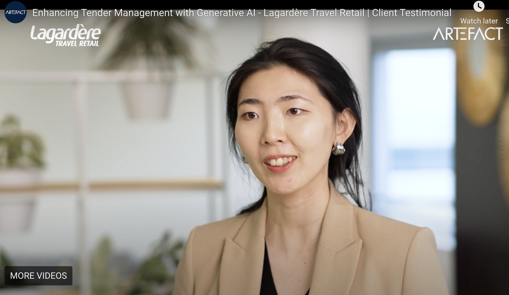
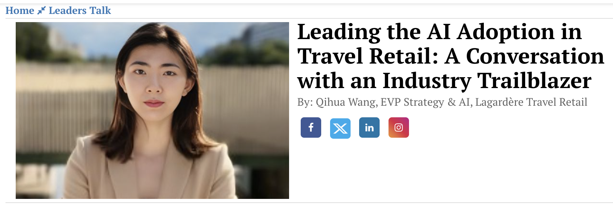

Qihua (Mia) Wang
I Drive Value with AI.
I’m an AI strategist passionate about solving complex problems. With a background in strategy consulting, I partner with organizations to build simple, human-first solutions that blend technology with purpose and drive real-world results.
See My ExperienceProfessional Experience
Strategy, technology and people — connecting the dots.
Consulting Excellence
Executed 20+ M&A advisory and strategy assignments, specializing in commercial & operational due diligence, synergy case development, and identifying tech-driven value creation levers for PE and corporate clients.
- Digital & Data Transformation: Designed B2B & B2C data platforms, built business cases for new digital products, and defined long‑term digital/data strategies for major European service providers.
- Growth & Go‑to‑Market: Developed segmentation, go‑to‑market, and partnership ecosystems; quantified revenue potential for transport and financial groups.
- M&A Advisory: Commercial & operational due diligence across technology, logistics and financial services; synergy cases and equity stories for PE and corporates.
- Operational Improvement: Managed organizational restructuring and cost-efficiency programs delivering significant value
AI Leadership
Built and led the corporate AI & Strategy division, transforming the company's approach to technology-driven growth and strategic planning.
AI (Division created in 2023)
- AI Leadership: Founded and scaled the AI division, managing a multi-million dollar budget and building a high-performing team of business and technical experts.
- AI Strategy: Architected the group's AI vision and a roadmap of 50+ GenAI and Predictive AI use cases to drive business value.
- End-to-End AI Delivery: Directed the full lifecycle of AI solution development, from concept to global rollout. Scaled high-impact use cases and delivered over 20 proofs-of-concept.
- Global AI Adoption: Established a global AI Ambassador network to accelerate the adoption of key initiatives like dynamic pricing and space allocation.
- AI Acculturation: Deployed bespoke training programs across all levels to drive enterprise-wide adoption and optimize business processes.
Strategy
- Strategic Planning: Led the development and operationalization of the group’s five-year strategic plan.
- Strategic Projects & M&A: Directed high-stakes strategic projects, including transformative M&A, post-acquisition integration, and major business development initiatives.
- Strategic Operations: Spearheaded the design and implementation of key strategic initiatives, focusing on new business model innovation and forging major commercial partnerships.
Entrepreneur • Coach • Influencer
In 2020, I launched Lighthouse Planet, a global community for Chinese professionals in tech and consulting. I have personally coached over 300 elite talents and built a network that now reaches 20,000+ Chinese elites working in top consulting firms and tech companies worldwide. As a coach and influencer on WeChat Public Account and Rednote, I write regularly about AI and strategy, with 100+ essays read by more than 1 million readers across Chinese platforms.
Global Education Foundation
A trilingual (English, French, Mandarin) education spanning three continents, providing a unique global perspective.
- Tsinghua University: Foundational analytical rigor from Asia's #1 ranked university.
- ESSEC Business School, Paris: ESSEC Excellence Scholarship / Chair of Therapeutic Innovation.
- University of Melbourne: For the fun, and international exposure of course.
Fun Facts
How to pronounce my name?
Unpronounceable, unforgettable.
In professional settings, I proudly keep my Chinese name: Qihua. "Qi" means playing chess, and "Hua" means painting and drawing. The only problem? Nobody can pronounce it. I sometimes watch people struggle and politely smile while they invent entirely new sounds.
But I wanted to keep it. My name carries my Asian identity, and I’ve never wanted to erase that part of myself.
What’s funny is that among family and friends in China, no one actually calls me Qihua. They all call me by my Western name — Mia. And truth be told, Mia feels even more "me." It’s short, easy, and I respond instantly when someone says it. So depending on where you meet me, I might be "Qihua" (the mysterious, unpronounceable professional) or "Mia" (the familiar, approachable version). Both are true, and both are me.

Could I have been a Ping Pong champion?
The professional athlete that could have been.
As a kid, I was a competitive ping pong player. I loved the rush of competition, the laser focus of a rally, and the relentless drive to improve after each match. For me, ping pong wasn’t just a sport; it was a way to test my limits — mentally, physically, and even emotionally.
At ten years old I already made my first biggest decision: should I pursue a professional sports career, or should I stay in school? Eventually, I chose education. Looking back, it was absolutely the right call.
The funny part? When French people ask me casually, “Tu sais jouer un peu au ping-pong ?” I usually shrug and say, “Oh, just a little…”
The Microphone Effect
Give me a mic, and I become someone else.
For more than 20 years, public speaking has been my arena. Back in university, I entered every single competition I could find — and I won. From local contests to major tournaments, I collected prize after prize, the stage could be my home. And this was long before AI could draft speeches — every word came from late nights, endless rewrites, and way too much caffeine.
What often surprises people is the contrast. In everyday life, I’m rather low-profile, calm, and not the first one to seek attention. But when I step on stage and take a microphone in hand, something shifts. My energy spikes, and I transform into someone else entirely.
With a mic, I’m fearless. For me, winning competitions was thrilling, but the real prize has always been that electric connection with an audience. That moment when words truly land. And maybe, just maybe, that’s my superpower.
The Geeky Side
From ugly code to AI code.
I built my first personal website at 12. Here’s the funny part: I didn’t even have internet access back then. I stumbled upon a massive 300-page book on HTML and web building, and I decided to learn by myself. I typed every single line of code manually, slowly piecing together something that resembled a "website."
The result? It was objectively ugly. Bright colors clashed, fonts were all over the place, and — cherry on top — I added a looping background music of the most popular song of that year. I thought it was genius.
When I entered it into a web-building competition, I lost, of course. But that failure was my first attempt at coding. Fast forward to today, and here I am building websites again — except now, AI does the heavy lifting and there is no tacky pop song.
The Word You Should Never Say in French
One word, one shocked interviewer.
When I first arrived in France, I didn’t speak a word of French. Everyone told me: if you want to work here, you must learn the language. So I gave myself one year. I studied, practiced, and pushed myself — and at the end of that year, I landed a job in top strategy consulting.
But not before a rather… unforgettable mistake.
In one interview, with McKinsey, I confused two words in French. One of them is totally fine, but the other is a word no one — absolutely no one — should ever say in a professional setting. Guess which one I used? The look on the interviewer’s face said it all. I was horrified when I later found out what I had actually said. It cost me the job, but it gave me one of my funniest (and most humbling) stories.
Be Careful What You Wish For
I asked for a year without flying… then 2020 happened.
After years of intense business travel, I was exhausted. On January 1, 2020, I made a very specific wish: “This year, I want a year without flying.” I thought maybe I’d get fewer work trips, maybe more time at home.
Well, we all know what happened next. Not just me — nobody in the world was flying in 2020. My friends still tease me about it: "Mia, next time, maybe wish for world peace instead." Now I always add a little disclaimer when I make a wish: careful with the wording, because the universe has a funny way of taking me way too literally.
Features & Publications
LinkedIn Articles
I regularly share insights on AI, business strategy, and leadership. Follow me on LinkedIn for my latest articles and posts.
View on LinkedIn → Lumina GenAI Solution
Deployment of Lumina, a generative AI tool designed to assist employees in responding better and faster to numerous annual tenders.
View on LinkedIn →
Keynote Speech at Hi! Paris
A 30-minute keynote on the future trends of artificial intelligence and its impact on modern business strategy.
Watch Full Video → Interview with Global Woman Leader
An interview on reshaping travel retail with AI by analyzing consumer behavior and enhancing customer experiences.
Read Article →WeChat Public Account
My public account, Lighthouse Planet (灯塔星球), features long-form essays in Chinese on career development and personal growth.
Show QR Code →
TRBusiness Magazine Interview
Featured in TRBusiness magazine, discussing market trends and strategic growth in the travel retail sector.
Read Feature →Get In Touch
I'm always open to discussing new projects, creative ideas, or opportunities to be part of your vision. Feel free to reach out.
Contact Me